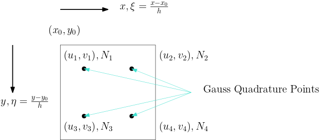
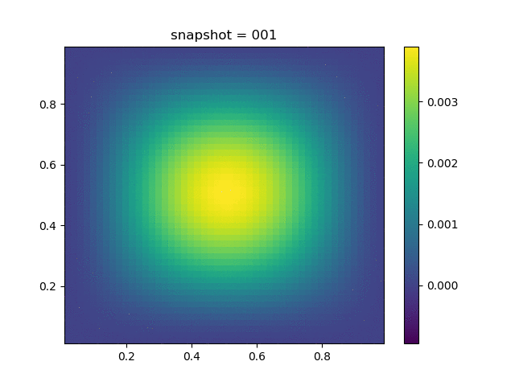
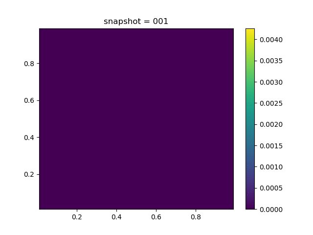
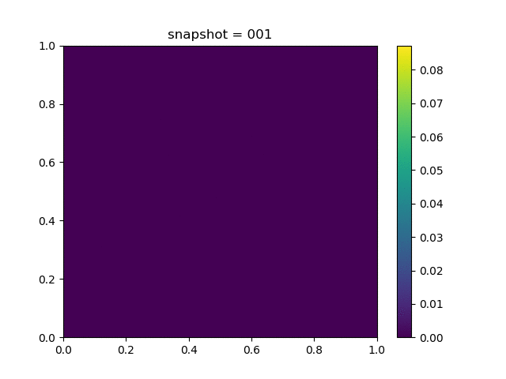
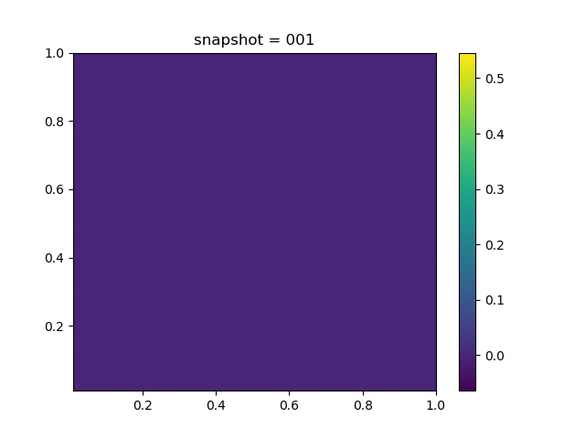
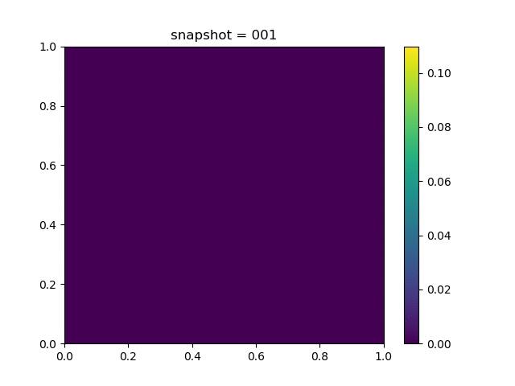
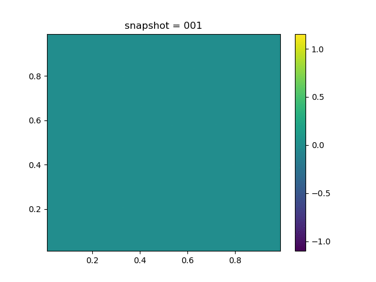
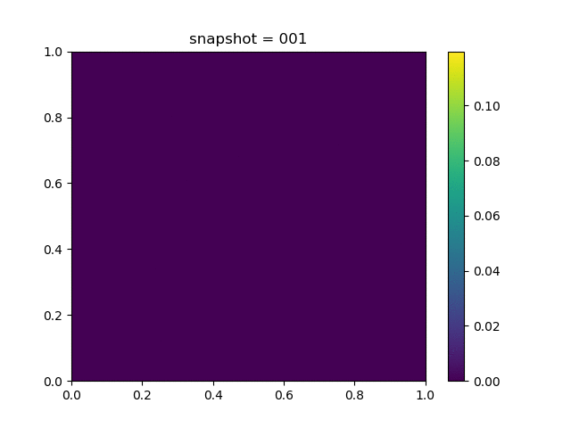
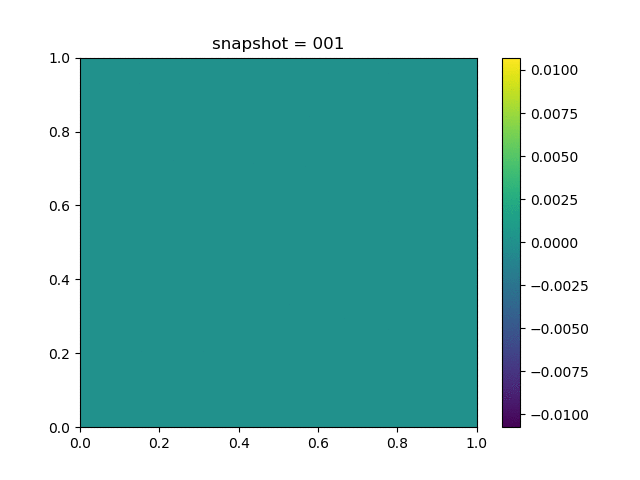
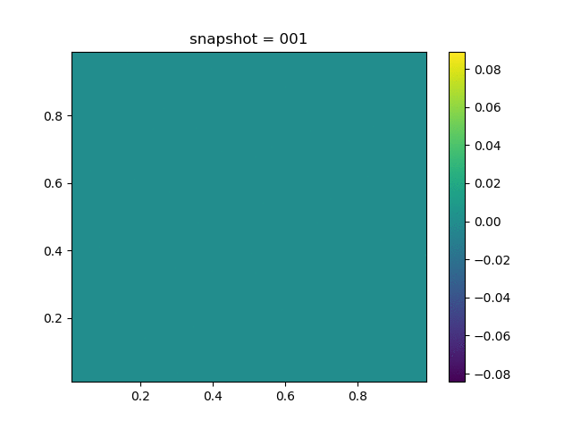

Coupled Geomechanics and Single Phase Flow
Mathematical Formulation
The governing equation for mechanical deformation of the solid-fluid system is
where $\mathrm{div}$ is the divergence operator, $\sigma$ is the Cauchy total-stress
and $g\in\mathbb{R}^2$ is the gravity vector, $\rho_b=\phi \rho_f + (1-\phi)\rho_s$ is the bulk density, $\rho_f$ is total fluid density, $\rho_s$ is the density of the solid phase and $\phi$ is the true porosity.
The stress-strain relation for linear poroelasticity takes the form
where $\mathbf{I}$ is the identity matrix, $p$ is the pressure, $b$ is the Biot coefficient, $D$ is the elasticity matrix
Here $E$ is the Young modulus, $\nu$ is the Poisson ratio and $\varepsilon$ is the strain
The relation between $\sigma'$ and $\varepsilon$ may be nonlinear; that's why we only write $\delta \sigma'$ in terms of $\delta \varepsilon$.
The fluid mass convervation in terms of pressure and volumetric strain is given by
where $\varepsilon_v = \mathrm{tr} \varepsilon$, $f$ is a volumetric source term and
where $k$ is the absolute permeability tensor, $\mu$ is the fluid viscosity and $B_f$ is the formation volume factor of the fluid.
The mechanical equation and fluid equation are coupled through $p$ and $\varepsilon$. In the drained split scheme, in each step $p$ is kept fixed while solving the mechanics equation and then the fluid equation is solved keeping $\varepsilon$ fixed. The drained scheme can be viewed as a Jacobian iteration of the fully coupled system.
The linear poroelasticity equations with $g=0$ can be expressed as [linear]
with boundary conditions
and the initial condition
Numerical Discretization
Mechanics
We discretize the domain $[0,(n-1)h]\times [0, (m-1)h]$ uniformly with step size $h$.

The finite element method is usually used to solve the mechanics equation, whose discretization reads
where $t = \sigma n = \sigma' n - bpn$, $\Gamma$ is the part of $\partial \Omega$ with external traction, and $n$ is the unit normal vector pointing outwards. One each element $A$, define $u_A$ as the nodal values of the basis functions whose supports overlap $A$, then the strain at $(x,y)$ can be expressed as (see the figure for illustration)
where
and

The terms in the weak form can be expressed as
Typically, the integration is computed using Gauss quadrature; for example, we have
where $(x_i, \eta_i)$ are Gauss quadrature points and $w_i$ is the corresponding weight.
We have the following convention for bdnode and bdedge, which denote the Dirichlet boundary conditions and the Neumann boundary conditions:
bdnode$\in \mathbf{R}^{d}$ and each entry inbdnoderepresents the node index. The corresponding row and column indices can be retrieved withfemidx.bdedge$\in \mathbf{R}^{d\times 2}$ and each row inbdedgerepresents indices of two end points of the edge. The corresponding cell row and column can be retrieved withfvmidx.
Fluid
The fluid equation is discretized using finite volume method.
For the divergence term, we use the two-point flux approximation and we have (assuming $k$ is a constant scalar)
where
Initial and Boundary Conditions
For the mechanial problem we consider
- Prescribed displacement: $u = \bar u$; or
- Prescribed traction: $\sigma\cdot n=\bar t$ (also called overburden).
For the flow problem we consider
- Prescribed pressure: $p=\bar p$; or
- Prescribed volumetric flux: $\mathbf{v}\cdot n=\bar v$ (called no flow if $\bar v=0$).
The initial displacement and strains are zero. The initial pressure is prescribed.
Verification
To verify our numerical scheme, we consider manufactured solution $u(x,y) = \begin{bmatrix} x^2+y^2\\ x^2-y^2 \end{bmatrix}t,\quad p(x,y) = x^2y^2(1-x)^2(1-y)^2e^{-t}$
Then we have
| Description | u displacement | v displacement | Pressure |
|---|---|---|---|
| Numerical Result |  | ||
| Error |  |
Benchmarks
Flooding
| u displacement | v displacement | Pressure | Von Mises Stress |
|---|---|---|---|
|  |  |
Injection-Production in Homogenious Media
| u displacement | v displacement | Pressure |
|---|---|---|
|  |  |
Injection-Production in Homogenious Media and with J2 plasticity
| Description | u displacement | v displacement | Pressure |
|---|---|---|---|
| $K = 0.5,\ \sigma_Y = 0.3$ |  |  | |
| $K = 0,\ \sigma_Y = 0.3$ | |||
| $K = 0.5,\ \sigma_Y = 1.0$ |  |
Injection-Production in Heterogenious Media
| u displacement | v displacement | Pressure |
|---|---|---|
|  |
- linearKolesov, Alexandr E., Petr N. Vabishchevich, and Maria V. Vasilyeva. "Splitting schemes for poroelasticity and thermoelasticity problems." Computers & Mathematics with Applications 67.12 (2014): 2185-2198.